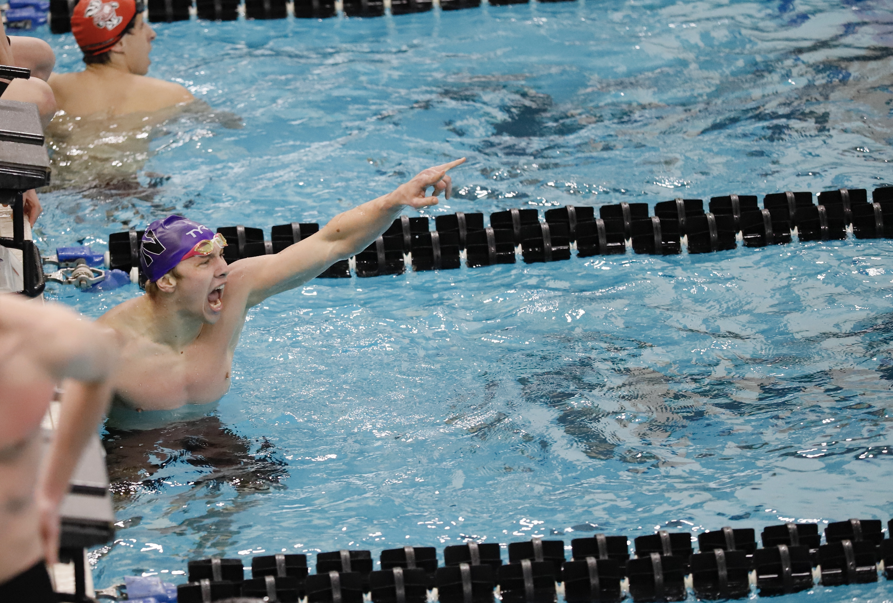

Swimming
My Story
My career began at the age of 7 when my parents put me in swim-lessons with the intention that I would grow up water-safe. Little did my parents know, this sport would become one of my greatest passions in life. Watching Michael Phelps in the 2008 Olympics inspired me to progress from swim lessons to club swimming. I dove into swim lessons with the confidence of an Olympic medalist and was quickly humbled. I could barely finish two laps!
As I grew up in the sport, I invested more time as a young teen. I met my best friends through swimming, so I loved going to practice, competing at meets, and spending time volunteering on the pool deck. I enjoyed the sport and everything that came with it. In high school, I realized how powerful the sport of swimming was, and how it could provide me with the opportunity to swim and study at some of the best universities in the world. While this added more pressure to perform, I never lost my childish love for the water.
At Northwestern I have been able to achieve goals I never thought possible. I get to train with some of the best in the world, compete in the Big Ten, and attend a top ten university. Additionally, I was able to compete at the 2021 United States Olympic Trials, fulfilling my childhood dream of vying for a spot to represent the U.S. at the Olympics.
Accolades
- Unites States Olympic Trials Qualifier
- 3-time Academic All-Big Ten
- Northwestern School Record Holder
- Northwestern Student-Athlete Advisory Comittee Executive
- Big Ten Sportsmanship Award Winner
Skills and Life-Lessons
I am forever grateful to the sport for shaping me into the person I am today. There is a certain gritty work ethic that is instilled in you when you are a swimmer. 5AM practices and grueling workouts take a toll, but it all becomes worth it when you eventually hit your goals.
I learned how to fail gracefully in swimming. Failure happens daily, and it hurts. In response, I attack the next rep and bounce back from things not going my way. As an engineer it is critical to develop this skill. The engineering design process is iterative, and failure is inevitable.
Swimming has also given me the opportunity to grow in my servant leadership. As an executive on the Student-Athlete Advisory committee, I work to relay my peer’s voices to upper-level staff in the Northwestern athletic department. This requires being invested in my teammate’s lives by listening to them and supporting them through action.
Gallery